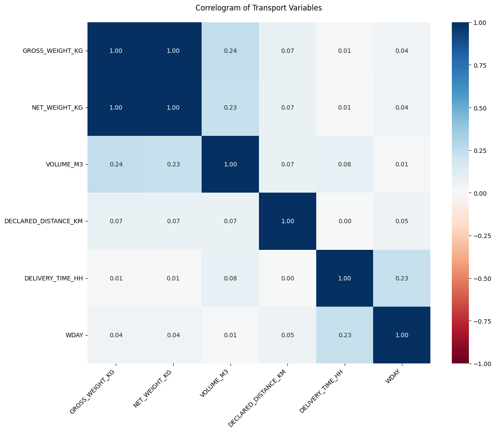
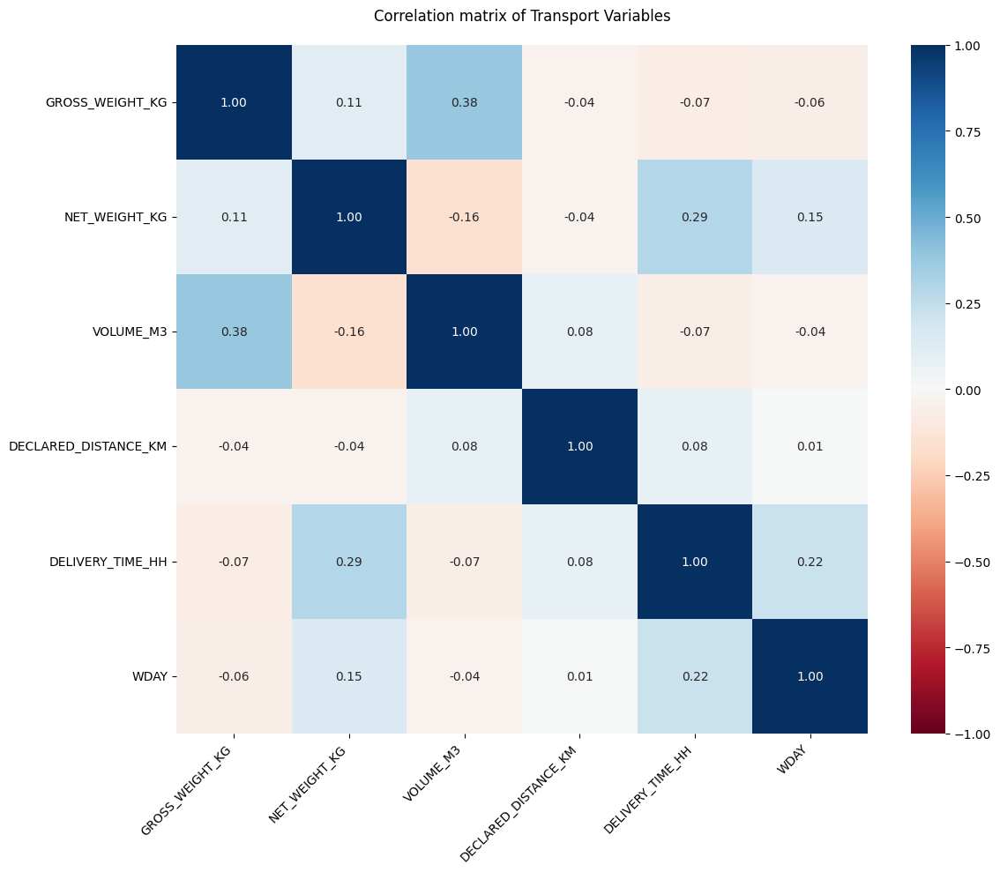
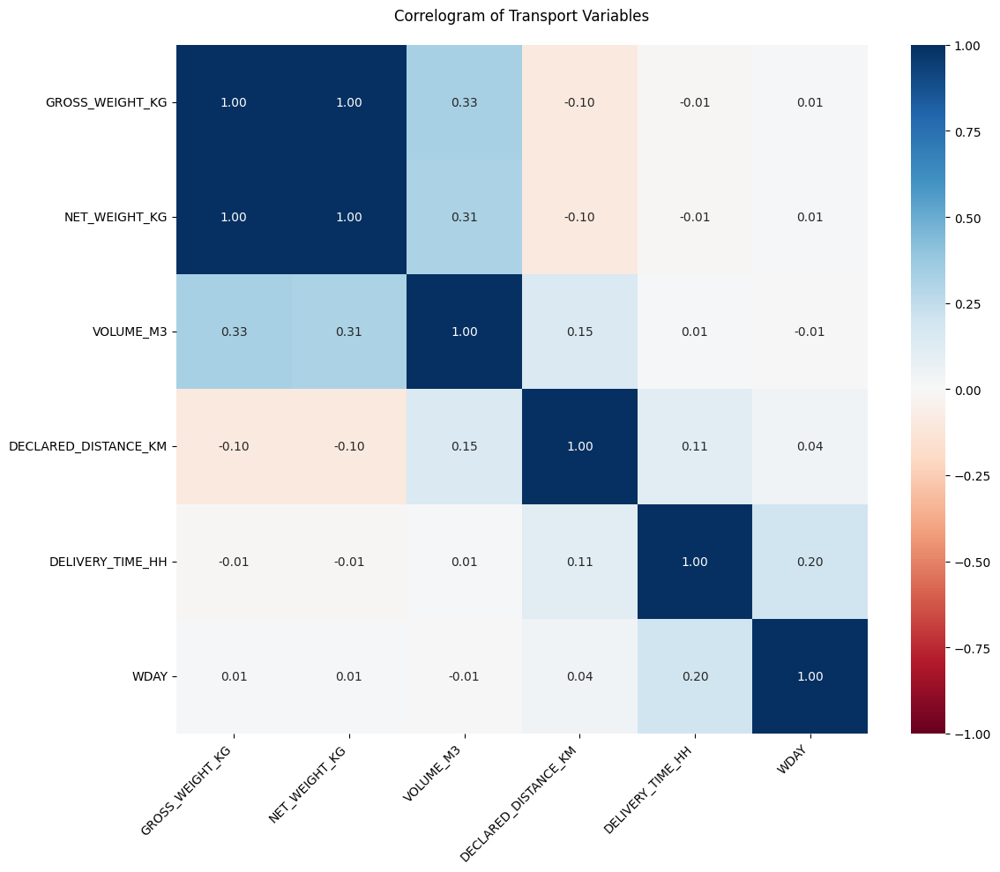
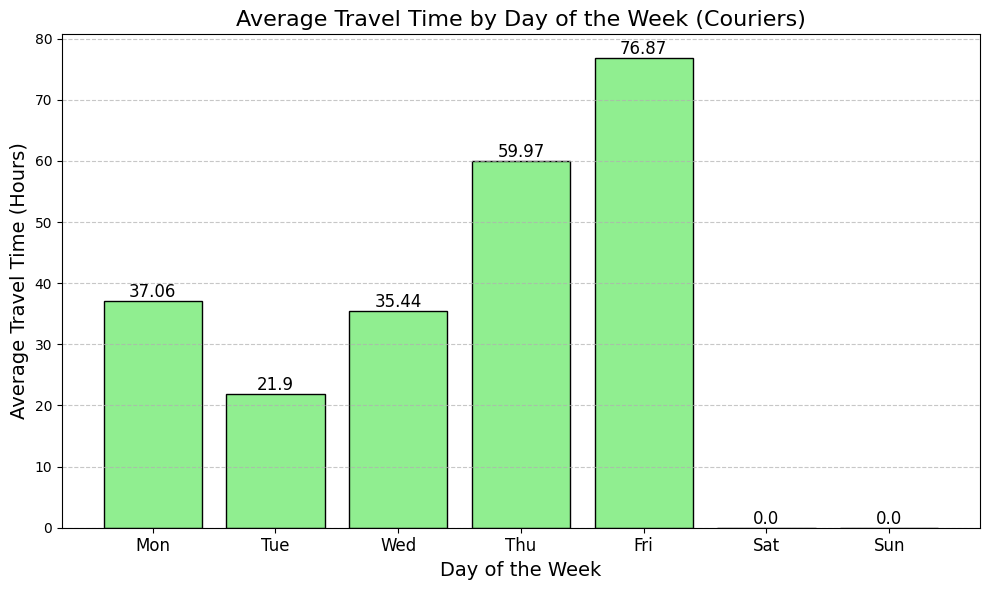
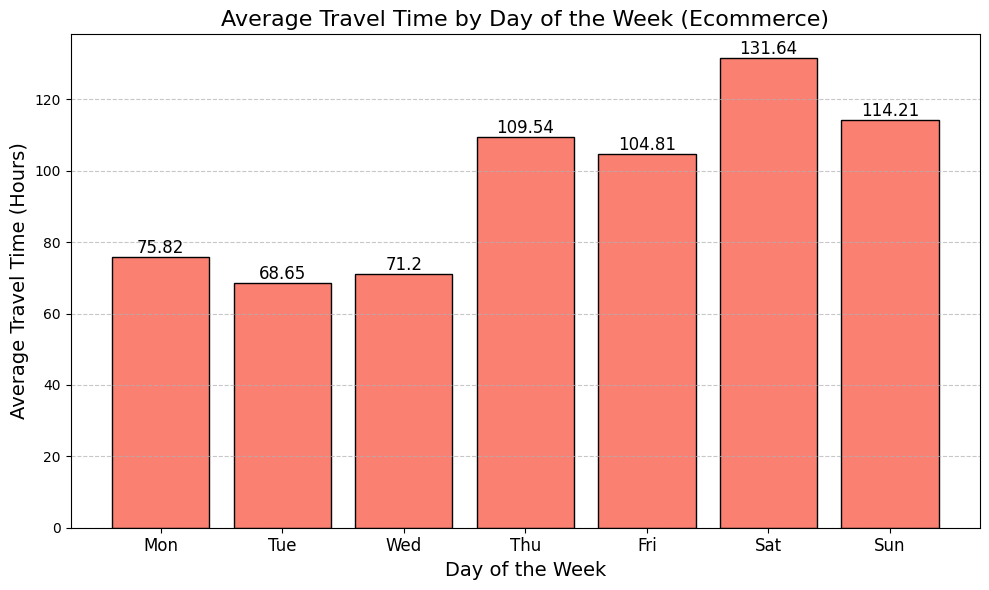
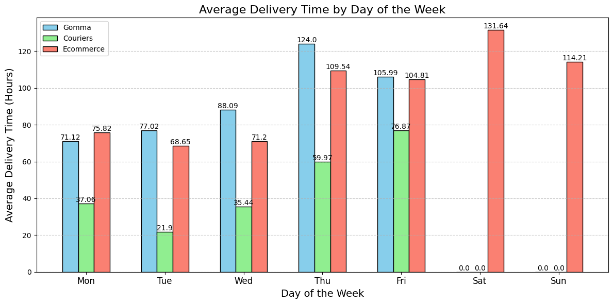

'''
Libraries versions
pandas: 2.2.3
numpy: 2.2.2
seaborn 0.13.2
matplotlib: 3.10.0
scikit-learn: 1.6.1
geopy: 2.4.1
tqdm: 4.67.1
requests: 2.32.3
folium: 0.19.4
'''
import pandas as pd
import numpy as np
import seaborn as sns
import matplotlib.pyplot as plt
from sklearn.linear_model import LinearRegression
from sklearn.model_selection import train_test_split
from sklearn.ensemble import RandomForestRegressor
from sklearn.preprocessing import LabelEncoder, StandardScaler
from sklearn.impute import SimpleImputer
from sklearn.pipeline import Pipeline
from sklearn.compose import ColumnTransformer
from sklearn.ensemble import RandomForestClassifier
from sklearn.metrics import accuracy_score, classification_report
from sklearn.base import BaseEstimator, TransformerMixin
from sklearn.ensemble import GradientBoostingRegressor
from sklearn.metrics import r2_score
from sklearn.preprocessing import RobustScaler
from geopy.geocoders import Nominatim
from typing import Optional, Tuple
from tqdm import tqdm
import requests
import mpu
import os
import json
import warnings
import requests
from datetime import datetime, timedelta
import csv
from geopy.distance import geodesic
import folium
import timeLogistics Dataset Analysis - Tesisquare
Introduction
This document provides an overview of the analysis conducted on a dataset provided by the company Tesisquare.
The goal of our work was to understand trends and issues within logistics operations, performing a thorough analysis to identify patterns and areas for improvement.
Analysis Details
The dataset includes various variables, such as: - Delivery Times: analysis of the time taken for deliveries, considering both distance and work time.
We applied statistical analysis, machine learning techniques, and data visualization to uncover optimization opportunities.
Project Team
The project was carried out by a team of four members, each with specific expertise and responsibilities in the analysis process. The team consists of:
- Solaro Federico:
- Fechino Alessia
- Gondolo Filippo
- Isoardo Jason
- Fino Vittorio
Conclusions
The analysis of the dataset revealed several areas with patterns such as longer delivery times near weekends and great majority of orders were in e-commerce, thanks to the data provided the group created a LM to predict distance and time spent for delivery from 2 ZIP codes (departure-arrival).
Acknowledgments
We would like to thank Tesisquare for providing the dataset and for giving us the opportunity to work on this project.
PROJECT
first of all we need to install all the libraries needed
Reading of the csv file and dataset information
# Loading the dataset from a CSV file
data = pd.read_csv("./delivery_data.csv")
# Displaying dataset information (column types, non-null values, etc.)
data.info()<class 'pandas.core.frame.DataFrame'>
RangeIndex: 14554 entries, 0 to 14553
Data columns (total 15 columns):
# Column Non-Null Count Dtype
--- ------ -------------- -----
0 Unnamed: 0 14554 non-null int64
1 SERVICETYPE 14340 non-null object
2 VEHICLETYPE 14331 non-null object
3 DEPARTURE_COUNTRY 14554 non-null object
4 DEPARTURE_ZIPCODE 14548 non-null float64
5 ARRIVAL_COUNTRY 14554 non-null object
6 ARRIVAL_ZIPCODE 14554 non-null int64
7 SHIPPING_DATE 14554 non-null object
8 GROSS_WEIGHT_KG 14554 non-null float64
9 NET_WEIGHT_KG 14554 non-null float64
10 VOLUME_M3 14554 non-null float64
11 DECLARED_DISTANCE_KM 11577 non-null float64
12 ACTUAL_DELIVERY_DATE 14554 non-null object
13 DELIVERY_TIME_HH 14554 non-null int64
14 WDAY 14554 non-null int64
dtypes: float64(5), int64(4), object(6)
memory usage: 1.7+ MBFirst let’s see how many rows and columns our dataset is made up of. Next we look at what kind of features are and check in which columns the data is missing
# Displaying summary statistics of the dataset
data.describe()| Unnamed: 0 | DEPARTURE_ZIPCODE | ARRIVAL_ZIPCODE | GROSS_WEIGHT_KG | NET_WEIGHT_KG | VOLUME_M3 | DECLARED_DISTANCE_KM | DELIVERY_TIME_HH | WDAY | |
|---|---|---|---|---|---|---|---|---|---|
| count | 14554.000000 | 14548.000000 | 14554.000000 | 14554.000000 | 14554.000000 | 14554.000000 | 11577.000000 | 14554.000000 | 14554.000000 |
| mean | 7277.500000 | 53013.321694 | 41699.581352 | 9.744264 | 8.002172 | 0.188305 | 352.646287 | 75.783633 | 1.730177 |
| std | 4201.522244 | 22512.124864 | 30222.758997 | 34.946037 | 31.718243 | 0.983377 | 166.566613 | 79.110044 | 1.507748 |
| min | 1.000000 | 12.000000 | 10.000000 | 0.020000 | 0.000000 | 0.000000 | 0.640000 | -1344.000000 | 0.000000 |
| 25% | 3639.250000 | 56122.750000 | 17031.000000 | 1.000000 | 0.000000 | 0.010000 | 223.850000 | 37.000000 | 0.000000 |
| 50% | 7277.500000 | 63076.000000 | 35042.000000 | 1.370000 | 0.000000 | 0.010000 | 353.190000 | 71.000000 | 1.000000 |
| 75% | 10915.750000 | 63076.000000 | 66020.000000 | 3.160000 | 2.280000 | 0.110000 | 468.690000 | 108.000000 | 3.000000 |
| max | 14554.000000 | 99208.000000 | 99518.000000 | 1039.820000 | 948.840000 | 105.000000 | 1090.610000 | 1920.000000 | 6.000000 |
let’s control the data and find values such as standard variation, mean, max, … for every feature
Let’s divide the dataset in three based on SERVICETYPE
Looking at the datasent information we decided to split the csv file in 3 parts concerning the different types of services e-commerce, courier and road transport
# Read the original CSV file
df = pd.read_csv('delivery_data.csv')
# Count rows with NaN in SERVICETYPE before removing them
nan_count = df['SERVICETYPE'].isna().sum()
# Remove rows with NaN in SERVICETYPE
df = df.dropna(subset=['SERVICETYPE'])
# Count IT-US shipments before removing them
it_us_count = (
((df['DEPARTURE_COUNTRY'] == 'IT') & (df['ARRIVAL_COUNTRY'] == 'US')) |
((df['DEPARTURE_COUNTRY'] == 'US') & (df['ARRIVAL_COUNTRY'] == 'IT'))
).sum()
# Remove shipments between IT and US in both directions
mask_it_us = ~(
((df['DEPARTURE_COUNTRY'] == 'IT') & (df['ARRIVAL_COUNTRY'] == 'US')) |
((df['DEPARTURE_COUNTRY'] == 'US') & (df['ARRIVAL_COUNTRY'] == 'IT'))
)
df = df[mask_it_us]
# Create three separate DataFrames based on SERVICETYPE
# 1. Express Couriers
couriers_df = df[df['SERVICETYPE'].isin(['Corriere espresso', 'Corriere espresso resi'])]
# 2. Road Transport
road_df = df[df['SERVICETYPE'] == 'Via gomma']
# 3. E-commerce
ecommerce_df = df[df['SERVICETYPE'].isin(['E-commerce', 'E-commerce Resi'])]
# Save the DataFrames to separate CSV files
couriers_df.to_csv('corrieri_data.csv', index=False)
road_df.to_csv('gomma_data.csv', index=False)
ecommerce_df.to_csv('ecommerce_data.csv', index=False)
# Print detailed statistics
print("Statistics of the generated files:")
print(f"\nRows in corrieri file: {len(couriers_df)}")
print(f"Rows in gomma transport file: {len(road_df)}")
print(f"Rows in e-commerce file: {len(ecommerce_df)}")
# Print removed rows count
print(f"\nRows removed due to NaN in SERVICETYPE: {nan_count}")
print(f"Rows removed due to IT-US shipments: {it_us_count}")Statistics of the generated files:
Rows in corrieri file: 2875
Rows in gomma transport file: 1863
Rows in e-commerce file: 9028
Rows removed due to NaN in SERVICETYPE: 214
Rows removed due to IT-US shipments: 574Calculation for the missing DECLARED_DISTANCE_KM in the dataset
def get_osrm_distance(coord1, coord2):
"""
Retrieves the driving distance (in km) and duration (in seconds)
between two coordinates using the OSRM API.
"""
url = f"http://router.project-osrm.org/route/v1/driving/{coord1[1]},{coord1[0]};{coord2[1]},{coord2[0]}"
response = requests.get(url)
data = response.json()
if 'routes' in data and len(data['routes']) > 0:
distance_km = data['routes'][0]['distance'] / 1000
duration_seconds = data['routes'][0]['duration']
return round(distance_km, 2), duration_seconds
return None, Nonedef get_zipcode_coordinates(zipcode: str, country) -> Optional[Tuple[float, float]]:
"""
Returns the latitude and longitude of a given ZIP code and country using the Nominatim geocoding API.
"""
try:
geolocator = Nominatim(user_agent="my_distance_calculator")
location = geolocator.geocode(f"{zipcode}, {country}")
if location:
return (location.latitude, location.longitude)
return None
except Exception:
return Nonedef print_statistics(file_name, processed_rows, successful_lookups, failed_lookups):
"""
Prints statistics on the processed dataset.
"""
total = successful_lookups + failed_lookups
success_rate = (successful_lookups / total * 100) if total > 0 else 0
failure_rate = (failed_lookups / total * 100) if total > 0 else 0
print(f"\n--- Statistics for {file_name} after {processed_rows} processed rows ---")
print(f"Successful lookups: {successful_lookups} ({success_rate:.2f}%)")
print(f"Failed lookups: {failed_lookups} ({failure_rate:.2f}%)")
print("------------------------------------------------\n")def process_dataset(filename: str):
"""
Processes the dataset, calculates missing distances, and updates the CSV file.
"""
print(f"\nProcessing {filename}...")
# Load the dataset
data = pd.read_csv(filename)
# Filter the DataFrame for rows where distance needs to be calculated
filtered_data = data[
(data['DECLARED_DISTANCE_KM'].isna() | (data['DECLARED_DISTANCE_KM'] == 0))
]
# Counters for statistics
processed_rows = 0
successful_lookups = 0
failed_lookups = 0
# Iterate through the filtered dataset
for index, row in tqdm(filtered_data.iterrows(), total=filtered_data.shape[0],
desc=f"Processing {filename}"):
processed_rows += 1
departure_country = row['DEPARTURE_COUNTRY']
departure_zipcode = row['DEPARTURE_ZIPCODE']
arrival_zipcode = row['ARRIVAL_ZIPCODE']
if departure_country in ["IT", "US"]:
departure_coords = get_zipcode_coordinates(departure_zipcode, departure_country)
arrival_coords = get_zipcode_coordinates(arrival_zipcode, departure_country)
else:
failed_lookups += 1
continue
if departure_coords and arrival_coords:
distance = None
error_count = 0
while error_count < 5:
distance, _ = get_osrm_distance(departure_coords, arrival_coords)
if distance is not None:
# Update the DataFrame and immediately save it to the same file
data.at[index, 'DECLARED_DISTANCE_KM'] = distance
data.to_csv(filename, index=False)
successful_lookups += 1
break
error_count += 1
time.sleep(1) # Add a delay to avoid too many requests
if error_count == 5:
print(f"Unable to find distance for row {index}")
failed_lookups += 1
else:
failed_lookups += 1
# Print statistics every 100 rows
if processed_rows % 100 == 0:
print_statistics(filename, processed_rows, successful_lookups, failed_lookups)
# Print final statistics
print_statistics(filename, processed_rows, successful_lookups, failed_lookups)
return processed_rows, successful_lookups, failed_lookupsdef main():
"""
Main function to process multiple dataset files and calculate distances.
"""
# List of files to process
files = [
"gomma_data.csv",
"corrieri_data.csv",
"ecommerce_data.csv"
]
total_stats = {
"processed": 0,
"successful": 0,
"failed": 0
}
# Process each file
for filename in files:
try:
processed, successful, failed = process_dataset(filename)
total_stats["processed"] += processed
total_stats["successful"] += successful
total_stats["failed"] += failed
print(f"Processing completed for {filename}")
except FileNotFoundError:
print(f"File not found: {filename}")
except Exception as e:
print(f"Error processing {filename}: {str(e)}")
# Print total statistics
print("\n=== Total Statistics ===")
print(f"Total processed rows: {total_stats['processed']}")
print(f"Total successful lookups: {total_stats['successful']}")
print(f"Total failed lookups: {total_stats['failed']}")
print("=========================")
if __name__ == "__main__":
main()Merging the 3 files
In addition to merging we added the missing rows from the original dataset
def clean_delivery_data(main_file, additional_files):
"""
Data cleaning and integration procedure for delivery data
Args:
main_file (str): Path to the main CSV file
additional_files (list): List of paths to additional CSV files
Returns:
DataFrame: DataFrame with integrated kilometers and corrected times
"""
# 1. Load the main dataset
delivery_df = pd.read_csv(main_file)
# 2. Create a copy of the dataset
integrated_km_df = delivery_df.copy()
# 3. Try to fill in missing kilometers from other datasets
for additional_file in additional_files:
additional_df = pd.read_csv(additional_file)
# Find rows with missing kilometers
missing_km_mask = integrated_km_df['DECLARED_DISTANCE_KM'].isna()
# Try to integrate kilometers from the other dataset
for index, row in integrated_km_df[missing_km_mask].iterrows():
match = additional_df[
(additional_df['DEPARTURE_COUNTRY'] == row['DEPARTURE_COUNTRY']) &
(additional_df['ARRIVAL_COUNTRY'] == row['ARRIVAL_COUNTRY'])
]
if not match.empty:
mode_value = match['DECLARED_DISTANCE_KM'].mode()
if not mode_value.empty:
integrated_km_df.at[index, 'DECLARED_DISTANCE_KM'] = mode_value.iloc[0]
# 4. Handle negative travel times
negative_travel_time_mask = integrated_km_df['DELIVERY_TIME_HH'] < 0
# Convert negative times to positive and swap the dates
integrated_km_df.loc[negative_travel_time_mask, 'DELIVERY_TIME_HH'] = abs(integrated_km_df.loc[negative_travel_time_mask, 'DELIVERY_TIME_HH'])
integrated_km_df.loc[negative_travel_time_mask, ['SHIPPING_DATE', 'ACTUAL_DELIVERY_DATE']] = \
integrated_km_df.loc[negative_travel_time_mask, ['ACTUAL_DELIVERY_DATE', 'SHIPPING_DATE']].values
return integrated_km_df
# Example usage
main_file = 'delivery_data.csv'
additional_files = ['gomma_data.csv', 'ecommerce_data.csv', 'corrieri_data.csv']
# Execute the data cleaning
cleaned_data = clean_delivery_data(main_file, additional_files)
# Save the cleaned dataset
cleaned_data.to_csv('delivery_data_clear.csv', index=False)
print("Data cleaning completed.")
print("Cleaned dataset saved as 'delivery_data_clear.csv'")Data cleaning completed.
Cleaned dataset saved as 'delivery_data_clear.csv'We finalized the cleaning in these 2 final steps
1) Added missing DECLARED_DISTANCE_KM from the original dataset
def get_osrm_distance(coord1, coord2):
"""
Retrieves the driving distance (in km) and duration (in seconds)
between two coordinates using the OSRM API.
"""
url = f"http://router.project-osrm.org/route/v1/driving/{coord1[1]},{coord1[0]};{coord2[1]},{coord2[0]}"
response = requests.get(url)
data = response.json()
if 'routes' in data and len(data['routes']) > 0:
distance_km = data['routes'][0]['distance'] / 1000
duration_seconds = data['routes'][0]['duration']
return round(distance_km, 2), duration_seconds
return None, Nonedef get_zipcode_coordinates(zipcode: str, country) -> Optional[Tuple[float, float]]:
"""
Returns the latitude and longitude of a given ZIP code and country using the Nominatim geocoding API.
"""
try:
geolocator = Nominatim(user_agent="my_distance_calculator")
location = geolocator.geocode(f"{zipcode}, {country}")
if location:
return (location.latitude, location.longitude)
return None
except Exception:
return Nonedef print_statistics(processed_rows, successful_lookups, failed_lookups):
"""
Prints statistics on the processed dataset.
"""
total = successful_lookups + failed_lookups
success_rate = (successful_lookups / total * 100) if total > 0 else 0
failure_rate = (failed_lookups / total * 100) if total > 0 else 0
print(f"\n--- Processing Statistics ---")
print(f"Processed rows: {processed_rows}")
print(f"Successful lookups: {successful_lookups} ({success_rate:.2f}%)")
print(f"Failed lookups: {failed_lookups} ({failure_rate:.2f}%)")
print("------------------------------------------------\n")def process_dataset():
"""
Processes the dataset, calculates missing distances, and updates the CSV file.
"""
filename = "delivery_data_clear.csv"
print(f"\nProcessing {filename}...")
# Load the dataset
data = pd.read_csv(filename)
# Filter the DataFrame for rows where distance needs to be calculated
filtered_data = data[
(data['DECLARED_DISTANCE_KM'].isna() | (data['DECLARED_DISTANCE_KM'] == 0))
]
# Counters for statistics
processed_rows = 0
successful_lookups = 0
failed_lookups = 0
# Iterate through the filtered dataset
for index, row in tqdm(filtered_data.iterrows(), total=filtered_data.shape[0],
desc=f"Processing distances"):
processed_rows += 1
departure_country = row['DEPARTURE_COUNTRY']
departure_zipcode = row['DEPARTURE_ZIPCODE']
arrival_zipcode = row['ARRIVAL_ZIPCODE']
if departure_country in ["IT", "US"]:
departure_coords = get_zipcode_coordinates(departure_zipcode, departure_country)
arrival_coords = get_zipcode_coordinates(arrival_zipcode, departure_country)
else:
failed_lookups += 1
continue
if departure_coords and arrival_coords:
distance = None
error_count = 0
while error_count < 5:
distance, _ = get_osrm_distance(departure_coords, arrival_coords)
if distance is not None:
# Update the DataFrame and immediately save it to the same file
data.at[index, 'DECLARED_DISTANCE_KM'] = distance
data.to_csv(filename, index=False)
successful_lookups += 1
break
error_count += 1
time.sleep(1) # Add a delay to avoid too many requests
if error_count == 5:
print(f"Unable to find distance for row {index}")
failed_lookups += 1
else:
failed_lookups += 1
# Print statistics every 100 rows
if processed_rows % 100 == 0:
print_statistics(processed_rows, successful_lookups, failed_lookups)
# Print final statistics
print_statistics(processed_rows, successful_lookups, failed_lookups)
return processed_rows, successful_lookups, failed_lookupsdef main():
"""
Main function to process the dataset and calculate distances.
"""
try:
processed, successful, failed = process_dataset()
print(f"\nProcessing completed.")
print(f"Total processed rows: {processed}")
print(f"Successful lookups: {successful}")
print(f"Failed lookups: {failed}")
except FileNotFoundError:
print("File delivery_data_clear.csv not found.")
except Exception as e:
print(f"Error processing the file: {str(e)}")
if __name__ == "__main__":
main()
Processing delivery_data_clear.csv...Processing distances: 0it [00:00, ?it/s]
--- Processing Statistics ---
Processed rows: 0
Successful lookups: 0 (0.00%)
Failed lookups: 0 (0.00%)
------------------------------------------------
Processing completed.
Total processed rows: 0
Successful lookups: 0
Failed lookups: 02) Added missing values for SERVICETYPE and VEHICLETYPE
# Suppress specific warnings
warnings.filterwarnings('ignore', category=FutureWarning)
warnings.filterwarnings('ignore', category=UserWarning)# Let's check the missing columns
class MultiColumnLabelEncoder(BaseEstimator, TransformerMixin):
def __init__(self, columns=None):
self.columns = columns
self.encoders = {}
def fit(self, X, y=None):
# Ensure X is a DataFrame
X = pd.DataFrame(X)
# If no columns specified, use all columns
if self.columns is None:
self.columns = X.columns
# Fit label encoders for specified columns
for col in self.columns:
le = LabelEncoder()
# Handle mixed type columns by converting to string
try:
le.fit(X[col].astype(str).fillna('Unknown'))
except TypeError:
le.fit(X[col].fillna('Unknown').astype(str))
self.encoders[col] = le
return self
def transform(self, X):
# Ensure X is a DataFrame
X = pd.DataFrame(X)
X_copy = X.copy()
for col in self.columns:
# Check if column exists and has an encoder
if col in X_copy.columns and col in self.encoders:
le = self.encoders[col]
# Transform column, handling unseen and NaN values
X_copy[col] = X_copy[col].fillna('Unknown')
X_copy[col] = X_copy[col].map(
lambda s: le.transform([str(s)])[0]
if str(s) in le.classes_
else -1
)
return X_copy
def fit_transform(self, X, y=None):
return self.fit(X).transform(X)def prepare_data_for_ml(df):
"""
Prepare the data for training the Machine Learning model
Args:
df (pd.DataFrame): Original dataset
Returns:
tuple: Features, target for SERVICETYPE and VEHICLETYPE
"""
# Select features for prediction
features_columns = [
'DEPARTURE_COUNTRY',
'ARRIVAL_COUNTRY',
'GROSS_WEIGHT_KG',
'NET_WEIGHT_KG',
'VOLUME_M3',
'DECLARED_DISTANCE_KM',
'DELIVERY_TIME_HH',
'WDAY'
]
# Create a copy of the dataset
df_prepared = df.copy()
# Remove rows with null target values
df_known = df_prepared.dropna(subset=['SERVICETYPE', 'VEHICLETYPE'])
# Validate that we have enough data for training
if len(df_known) == 0:
raise ValueError("No rows available for training after removing null targets")
# Prepare the features
X = df_known[features_columns].copy()
# Prepare the targets
y_service = df_known['SERVICETYPE']
y_vehicle = df_known['VEHICLETYPE']
return X, y_service, y_vehicledef create_ml_pipeline(is_categorical=True):
"""
Create a preprocessing and classification pipeline
Args:
is_categorical (bool): If True, use encoding for categorical columns
Returns:
Pipeline: Preprocessing and classification pipeline
"""
# Numeric and categorical columns
numeric_features = [
'GROSS_WEIGHT_KG',
'NET_WEIGHT_KG',
'VOLUME_M3',
'DECLARED_DISTANCE_KM',
'DELIVERY_TIME_HH',
'WDAY'
]
categorical_features = ['DEPARTURE_COUNTRY', 'ARRIVAL_COUNTRY']
# Preprocessing for numeric columns
numeric_transformer = Pipeline(steps=[
('imputer', SimpleImputer(strategy='median')),
('scaler', StandardScaler())
])
# Preprocessing for categorical columns
preprocessing_steps = [
('imputer', SimpleImputer(strategy='most_frequent'))
]
# Add encoding if requested
if is_categorical:
preprocessing_steps.append(('encoder', MultiColumnLabelEncoder()))
categorical_transformer = Pipeline(steps=preprocessing_steps)
# Combine preprocessors
preprocessor = ColumnTransformer(
transformers=[
('num', numeric_transformer, numeric_features),
('cat', categorical_transformer, categorical_features)
])
# Complete pipeline with preprocessor and classifier
pipeline = Pipeline(steps=[
('preprocessor', preprocessor),
('classifier', RandomForestClassifier(n_estimators=100, random_state=42))
])
return pipelinedef impute_with_ml(input_file):
"""
Impute missing values using Machine Learning
Args:
input_file (str): Path to the input CSV file
Returns:
pd.DataFrame: DataFrame with imputed values
"""
# Load the dataset
try:
df = pd.read_csv(input_file)
except FileNotFoundError:
print(f"Error: File {input_file} not found.")
return None
except Exception as e:
print(f"Error loading file: {e}")
return None
# Create a duplicate of the dataset
df_imputed = df.copy()
try:
# Prepare the data for training
X, y_service, y_vehicle = prepare_data_for_ml(df)
# Split the data into training and test sets
X_train, X_test, y_service_train, y_service_test, y_vehicle_train, y_vehicle_test = train_test_split(
X, y_service, y_vehicle, test_size=0.2, random_state=42
)
# Create and train the models
service_pipeline = create_ml_pipeline(is_categorical=True)
vehicle_pipeline = create_ml_pipeline(is_categorical=True)
# Train both models
service_pipeline.fit(X_train, y_service_train)
vehicle_pipeline.fit(X_train, y_vehicle_train)
# Evaluate the models
service_pred = service_pipeline.predict(X_test)
vehicle_pred = vehicle_pipeline.predict(X_test)
# Calculate accuracy
service_accuracy = accuracy_score(y_service_test, service_pred) * 100
vehicle_accuracy = accuracy_score(y_vehicle_test, vehicle_pred) * 100
print(f"\nSERVICETYPE Accuracy: {service_accuracy:.2f}%")
print(f"VEHICLETYPE Accuracy: {vehicle_accuracy:.2f}%")
# Identify rows with missing values
missing_mask = df_imputed['SERVICETYPE'].isna() | df_imputed['VEHICLETYPE'].isna()
missing_data = df_imputed.loc[missing_mask, X.columns].copy()
# Impute missing values
for index in missing_mask[missing_mask].index:
# Impute SERVICETYPE
if pd.isna(df_imputed.at[index, 'SERVICETYPE']):
df_imputed.at[index, 'SERVICETYPE'] = service_pipeline.predict(missing_data.loc[[index]])[0]
# Impute VEHICLETYPE
if pd.isna(df_imputed.at[index, 'VEHICLETYPE']):
df_imputed.at[index, 'VEHICLETYPE'] = vehicle_pipeline.predict(missing_data.loc[[index]])[0]
return df_imputed
except Exception as e:
print(f"Error during imputation process: {e}")
return Nonedef main():
"""
Main function to execute the imputation process
"""
input_file = 'delivery_data_clear.csv'
output_file = 'final_delivery_data.csv'
df_with_imputed_data = impute_with_ml(input_file)
if df_with_imputed_data is not None:
try:
df_with_imputed_data.to_csv(output_file, index=False)
print(f"\nFile '{output_file}' created successfully.")
except Exception as e:
print(f"Error saving the file: {e}")
if __name__ == "__main__":
main()
SERVICETYPE Accuracy: 96.72%
VEHICLETYPE Accuracy: 90.55%
File 'final_delivery_data.csv' created successfully.Creation of the correlation matrices
def correlation_matrix_from_csv(input_file):
'''
Create correlation matrix
Args:
input_file (str): path to input CSV file
'''
# Read the dataset
df = pd.read_csv(input_file)
# Select only the numeric columns of interest
columns_of_interest = [
'GROSS_WEIGHT_KG',
'NET_WEIGHT_KG',
'VOLUME_M3',
'DECLARED_DISTANCE_KM',
'DELIVERY_TIME_HH',
'WDAY'
]
# Calculate the correlation matrix
correlation_matrix = df[columns_of_interest].corr()
# Create a larger figure for better readability
plt.figure(figsize=(12, 10))
# Create the correlogram using seaborn
sns.heatmap(correlation_matrix,
annot=True, # Show numeric values
cmap='RdBu', # Use a blue-red colormap
vmin=-1, vmax=1, # Set scale limits
center=0, # Center the colormap on zero
fmt='.2f') # Show two decimals
# Rotate labels for better readability
plt.xticks(rotation=45, ha='right')
plt.yticks(rotation=0)
# Add a title
plt.title('Correlation matrix of Transport Variables', pad=20)
# Adjust the layout
plt.tight_layout()
plt.show()Matrix for road transport
correlation_matrix_from_csv('gomma_data.csv')
Matrix for E-commerce
correlation_matrix_from_csv('ecommerce_data.csv')
Matrix for couriers
correlation_matrix_from_csv('corrieri_data.csv')
Matrix for the complete dataset
correlation_matrix_from_csv('final_delivery_data.csv')
Based on these correlations matrices we can understand that what varies delivery time the most is the WDAY (day of departure), the more you are towards the weekend, the longer the delivery time will be
Creation of Histograms for all 3 types of service types
We do this in order to see if there is any data that may interest us
def histogram_average_time_x_day_from_csv(input_file, graph_color):
'''
Create Histogram average time by day of the week
Args:
input_file (str): path to input CSV file
graph_color (str): color for the graph
'''
# Load the dataset
df_gomma = pd.read_csv(input_file)
# Calculate the average delivery time for each day of the week
mean_delivery_time_gomma = df_gomma.groupby('WDAY')['DELIVERY_TIME_HH'].mean()
# Create a DataFrame with all days of the week
days_of_week = pd.DataFrame({'WDAY': range(7)})
mean_delivery_time_gomma = mean_delivery_time_gomma.reset_index()
mean_delivery_time_gomma = days_of_week.merge(mean_delivery_time_gomma, on='WDAY', how='left').fillna(0)
# Create the histogram
plt.figure(figsize=(10, 6))
bars = plt.bar(mean_delivery_time_gomma['WDAY'], mean_delivery_time_gomma['DELIVERY_TIME_HH'], color=graph_color, edgecolor='black')
plt.xlabel('Day of the Week', fontsize=14)
plt.ylabel('Average Travel Time (Hours)', fontsize=14)
plt.xticks(range(7), ['Mon', 'Tue', 'Wed', 'Thu', 'Fri', 'Sat', 'Sun'], fontsize=12)
plt.grid(axis='y', linestyle='--', alpha=0.7)
# Add value labels above each bar
for bar in bars:
yval = bar.get_height()
plt.text(bar.get_x() + bar.get_width()/2, yval, round(yval, 2), ha='center', va='bottom', fontsize=12)
plt.tight_layout()
plt.show()Histogram for Road Transport
histogram_average_time_x_day_from_csv('gomma_data.csv', 'skyblue')
Histogram for couriers
histogram_average_time_x_day_from_csv('corrieri_data.csv', 'lightgreen')
Histogram for E-commerce
histogram_average_time_x_day_from_csv('ecommerce_data.csv', 'salmon')
Histogram with every SERVICETYPE
# Load the datasets
df_gomma = pd.read_csv('gomma_data.csv')
df_corrieri = pd.read_csv('corrieri_data.csv')
df_ecommerce = pd.read_csv('ecommerce_data.csv')
# Calculate the average delivery time for each day of the week
mean_delivery_time_gomma = df_gomma.groupby('WDAY')['DELIVERY_TIME_HH'].mean().reset_index()
mean_delivery_time_corrieri = df_corrieri.groupby('WDAY')['DELIVERY_TIME_HH'].mean().reset_index()
mean_delivery_time_ecommerce = df_ecommerce.groupby('WDAY')['DELIVERY_TIME_HH'].mean().reset_index()
# Create a DataFrame with all days of the week
days_of_week = pd.DataFrame({'WDAY': range(7)})
mean_delivery_time_gomma = days_of_week.merge(mean_delivery_time_gomma, on='WDAY', how='left').fillna(0)
mean_delivery_time_corrieri = days_of_week.merge(mean_delivery_time_corrieri, on='WDAY', how='left').fillna(0)
mean_delivery_time_ecommerce = days_of_week.merge(mean_delivery_time_ecommerce, on='WDAY', how='left').fillna(0)
# Combine the data into a single DataFrame
combined_data = pd.DataFrame({
'WDAY': mean_delivery_time_gomma['WDAY'],
'Gomma': mean_delivery_time_gomma['DELIVERY_TIME_HH'],
'Couriers': mean_delivery_time_corrieri['DELIVERY_TIME_HH'],
'Ecommerce': mean_delivery_time_ecommerce['DELIVERY_TIME_HH']
})
# Set the bar width
bar_width = 0.2
x = np.arange(len(combined_data['WDAY']))
# Create the bar chart
plt.figure(figsize=(12, 6))
bars1 = plt.bar(x - bar_width, combined_data['Gomma'], width=bar_width, color='skyblue', edgecolor='black', label='Gomma')
bars2 = plt.bar(x, combined_data['Couriers'], width=bar_width, color='lightgreen', edgecolor='black', label='Couriers')
bars3 = plt.bar(x + bar_width, combined_data['Ecommerce'], width=bar_width, color='salmon', edgecolor='black', label='Ecommerce')
# Add titles and labels
plt.title('Average Delivery Time by Day of the Week', fontsize=16)
plt.xlabel('Day of the Week', fontsize=14)
plt.ylabel('Average Delivery Time (Hours)', fontsize=14)
plt.xticks(x, ['Mon', 'Tue', 'Wed', 'Thu', 'Fri', 'Sat', 'Sun'], fontsize=12)
plt.grid(axis='y', linestyle='--', alpha=0.7)
plt.legend()
# Add value labels above each bar
for bars in [bars1, bars2, bars3]:
for bar in bars:
yval = bar.get_height()
plt.text(bar.get_x() + bar.get_width()/2, yval, round(yval, 2), ha='center', va='bottom', fontsize=10)
plt.tight_layout()
plt.show()
Analyzing these data we can understand that, in case the service is Road transport or courier, packages aren’t delivered during the weekend. This information can be used to create the prediction algorithm.
let’s split the CSV file based on DEPARTURE_COUNTRY and ARRIVAL_COUNTRY
def split_csv(input_file):
# Read the CSV file
df = pd.read_csv(input_file)
# Filter for IT-IT deliveries
it_it = df[(df['DEPARTURE_COUNTRY'] == 'IT') & (df['ARRIVAL_COUNTRY'] == 'IT')]
it_it.to_csv('final_delivery_data_it_it.csv', index=False)
# Filter for US-US deliveries
us_us = df[(df['DEPARTURE_COUNTRY'] == 'US') & (df['ARRIVAL_COUNTRY'] == 'US')]
us_us.to_csv('final_delivery_data_us_us.csv', index=False)
# Filter for mixed IT-US or US-IT deliveries
mixed = df[
((df['DEPARTURE_COUNTRY'] == 'IT') & (df['ARRIVAL_COUNTRY'] == 'US')) |
((df['DEPARTURE_COUNTRY'] == 'US') & (df['ARRIVAL_COUNTRY'] == 'IT'))
]
mixed.to_csv('final_delivery_data_mixed.csv', index=False)
# Print summary
print(f"IT-IT deliveries: {len(it_it)}")
print(f"US-US deliveries: {len(us_us)}")
print(f"Mixed deliveries: {len(mixed)}")
# Run the splitting
split_csv('final_delivery_data.csv')IT-IT deliveries: 11755
US-US deliveries: 2225
Mixed deliveries: 574Distribution of Lines in CSV Files
# Set the graphic style
plt.style.use('ggplot')
# Define pastel colors
colors = ['#FF9999', '#66B2FF', '#99FF99']
# Files to analyze
files = [
'final_delivery_data_mixed.csv',
'final_delivery_data_it_it.csv',
'final_delivery_data_us_us.csv'
]
# Dictionary for line counting
line_counts = {}
for file in files:
try:
df = pd.read_csv(file)
line_counts[file] = len(df)
except FileNotFoundError:
print(f"File not found: {file}")
continue
# Calculate total lines
total_lines = sum(line_counts.values())
# Create readable labels
labels = [file.replace('final_delivery_data_', '').replace('.csv', '').upper() for file in files]
# Set font
plt.rcParams['font.family'] = 'sans-serif'
# Create the chart
fig, ax = plt.subplots(figsize=(12, 8), facecolor='white')
wedges, texts, autotexts = ax.pie(
line_counts.values(),
labels=labels,
autopct=lambda pct: f'{pct:.1f}%',
startangle=90,
colors=colors,
explode=[0.05] * len(files),
wedgeprops={'edgecolor': 'white', 'linewidth': 2}
)
# Customize text
plt.setp(autotexts, size=9, weight="bold", color="black")
plt.setp(texts, size=10)
# Add title
ax.set_title('Distribution of Lines in CSV Files',
pad=20,
fontsize=16,
fontweight='bold')
# Add legend
ax.legend([f'{label}\n({count:,} lines, {(count/total_lines*100):.1f}%)'
for label, count in zip(labels, line_counts.values())],
title="Details",
loc="center left",
bbox_to_anchor=(1, 0, 0.5, 1))
plt.axis('equal')
plt.tight_layout()
plt.show()
Creation for the road map
def get_zipcode_coordinates(zipcode: str, country: str) -> Optional[Tuple[float, float]]:
try:
geolocator = Nominatim(user_agent="delivery_route_mapper")
location = geolocator.geocode(f"{zipcode}, {country}")
if location:
return (location.latitude, location.longitude)
return None
except Exception as e:
print(f"Error getting coordinates for {zipcode}, {country}: {str(e)}")
return Nonedef draw_map(csv_filename: str):
"""
Creates a map visualization from delivery data, skipping specific ZIP codes
that were incorrectly mapped to non-US locations despite being US addresses.
ZIP codes 02476, 02482, and 02116 are Massachusetts ZIP codes that were
incorrectly geocoded to other countries, so we skip them to maintain data accuracy.
"""
# ZIP codes to skip due to incorrect geocoding outside the USA
skip_zipcodes = {'2476', '2482.0', '2116.0'}
try:
# Read only first 40 rows as a sample
dataset = pd.read_csv(csv_filename, nrows=40)
routes = []
cities = {}
# Progress bar for geocoding
for _, row in tqdm(dataset.iterrows(), total=dataset.shape[0], desc=f"Processing {csv_filename}"):
# Skip problematic ZIP codes that get mapped to wrong countries
if (str(row["DEPARTURE_ZIPCODE"]) in skip_zipcodes or
str(row["ARRIVAL_ZIPCODE"]) in skip_zipcodes):
continue
departure = get_zipcode_coordinates(str(row["DEPARTURE_ZIPCODE"]), row["DEPARTURE_COUNTRY"])
arrival = get_zipcode_coordinates(str(row["ARRIVAL_ZIPCODE"]), row["ARRIVAL_COUNTRY"])
if arrival is not None and departure is not None:
route = [departure, arrival]
routes.append(route)
cities[str(row["DEPARTURE_ZIPCODE"])] = departure
cities[str(row["ARRIVAL_ZIPCODE"])] = arrival
time.sleep(1) # Prevent overwhelming the geocoding service
# Create map centered on a middle point
map_vis = folium.Map(location=[45, 10], zoom_start=4)
# Add delivery routes
for route in tqdm(routes, desc="Adding Routes"):
folium.PolyLine(route, color="blue", weight=2, opacity=0.7).add_to(map_vis)
# Add city markers
for name, coord in tqdm(cities.items(), desc="Adding Markers"):
folium.Marker(coord, popup=name, icon=folium.Icon(color="red")).add_to(map_vis)
# Save map to HTML file
output_name = os.path.splitext(csv_filename)[0] + '_sample.html'
map_vis.save(output_name)
print(f"Sample map successfully created: {output_name}")
return True
except Exception as e:
print(f"Error processing {csv_filename}: {e}")
return Falsedef main():
files = [
'final_delivery_data_it_it.csv',
'final_delivery_data_us_us.csv',
'final_delivery_data_mixed.csv'
]
for file in files:
if os.path.exists(file):
draw_map(file)
else:
print(f"File not found: {file}")
if __name__ == "__main__":
main()Processing final_delivery_data_it_it.csv: 100%|██████████████████████████████████| 40/40 [01:59<00:00, 3.00s/it]
Adding Routes: 100%|██████████████████████████████████████████████████████████| 40/40 [00:00<00:00, 47339.77it/s]
Adding Markers: 100%|██████████████████████████████████████████████████████████| 27/27 [00:00<00:00, 8640.13it/s]Sample map successfully created: final_delivery_data_it_it_sample.htmlProcessing final_delivery_data_us_us.csv: 100%|██████████████████████████████████| 40/40 [01:51<00:00, 2.79s/it]
Adding Routes: 100%|███████████████████████████████████████████████████████████| 38/38 [00:00<00:00, 9791.35it/s]
Adding Markers: 100%|█████████████████████████████████████████████████████████| 49/49 [00:00<00:00, 14592.51it/s]Sample map successfully created: final_delivery_data_us_us_sample.htmlProcessing final_delivery_data_mixed.csv: 100%|██████████████████████████████████| 40/40 [01:51<00:00, 2.78s/it]
Adding Routes: 100%|██████████████████████████████████████████████████████████| 39/39 [00:00<00:00, 44632.43it/s]
Adding Markers: 100%|██████████████████████████████████████████████████████████| 39/39 [00:00<00:00, 8988.29it/s]Sample map successfully created: final_delivery_data_mixed_sample.htmlFinally we can create a LM to predict delivery time and distance
class DeliveryPredictor:
'''
A class for predicting delivery times and distances using machine learning models.
'''
def __init__(self):
'''
Initializes the DeliveryPredictor with necessary encoders and ML models.
'''
self.le_service = LabelEncoder()
self.le_vehicle = LabelEncoder()
self.le_dep_country = LabelEncoder()
self.le_arr_country = LabelEncoder()
self.le_dep_zip = LabelEncoder()
self.le_arr_zip = LabelEncoder()
self.scaler = RobustScaler()
self.imputer = SimpleImputer(strategy='median')
self.distance_model = GradientBoostingRegressor(
n_estimators=200,
learning_rate=0.1,
max_depth=5,
random_state=42
)
self.time_model = GradientBoostingRegressor(
n_estimators=200,
learning_rate=0.1,
max_depth=5,
random_state=42
)
self.unique_values = {}
def prepare_data(self, df):
'''
Prepares and transforms input data for model training or prediction.
args:
df (pandas.DataFrame): Input DataFrame containing delivery data
returns:
tuple: (X, df_cleaned) where X is the prepared feature matrix and df_cleaned is the processed DataFrame
'''
df = df.copy()
# Clean zip codes
df['DEPARTURE_ZIPCODE'] = df['DEPARTURE_ZIPCODE'].fillna('00000')
df['ARRIVAL_ZIPCODE'] = df['ARRIVAL_ZIPCODE'].fillna('00000')
df['DEPARTURE_ZIPCODE'] = df['DEPARTURE_ZIPCODE'].astype(str).str.replace('.0', '').str.zfill(5)
df['ARRIVAL_ZIPCODE'] = df['ARRIVAL_ZIPCODE'].astype(str).str.replace('.0', '').str.zfill(5)
# Remove rows with NaN in critical columns
critical_columns = ['DELIVERY_TIME_HH', 'DECLARED_DISTANCE_KM', 'SERVICETYPE', 'VEHICLETYPE',
'DEPARTURE_COUNTRY', 'ARRIVAL_COUNTRY', 'WDAY']
df.dropna(subset=critical_columns, inplace=True)
# Remove outliers from delivery time
q1 = df['DELIVERY_TIME_HH'].quantile(0.25)
q3 = df['DELIVERY_TIME_HH'].quantile(0.75)
iqr = q3 - q1
df = df[
(df['DELIVERY_TIME_HH'] >= q1 - 1.5 * iqr) &
(df['DELIVERY_TIME_HH'] <= q3 + 1.5 * iqr)
]
# Add derived features
df['SAME_COUNTRY'] = (df['DEPARTURE_COUNTRY'] == df['ARRIVAL_COUNTRY']).astype(int)
# Encode categorical variables
df['SERVICETYPE_encoded'] = self.le_service.fit_transform(df['SERVICETYPE'])
df['VEHICLETYPE_encoded'] = self.le_vehicle.fit_transform(df['VEHICLETYPE'])
df['DEPARTURE_COUNTRY_encoded'] = self.le_dep_country.fit_transform(df['DEPARTURE_COUNTRY'])
df['ARRIVAL_COUNTRY_encoded'] = self.le_arr_country.fit_transform(df['ARRIVAL_COUNTRY'])
df['DEPARTURE_ZIPCODE_encoded'] = self.le_dep_zip.fit_transform(df['DEPARTURE_ZIPCODE'])
df['ARRIVAL_ZIPCODE_encoded'] = self.le_arr_zip.fit_transform(df['ARRIVAL_ZIPCODE'])
# Store unique values
self.unique_values = {
'service_types': df['SERVICETYPE'].unique(),
'vehicle_types': df['VEHICLETYPE'].unique(),
'departure_countries': df['DEPARTURE_COUNTRY'].unique(),
'arrival_countries': df['ARRIVAL_COUNTRY'].unique(),
'departure_zipcodes': df['DEPARTURE_ZIPCODE'].unique(),
'arrival_zipcodes': df['ARRIVAL_ZIPCODE'].unique()
}
# Prepare features
features = [
'SERVICETYPE_encoded', 'VEHICLETYPE_encoded',
'DEPARTURE_COUNTRY_encoded', 'ARRIVAL_COUNTRY_encoded',
'DEPARTURE_ZIPCODE_encoded', 'ARRIVAL_ZIPCODE_encoded',
'WDAY', 'SAME_COUNTRY'
]
# Add DISTANCE_ENCODED
if 'DECLARED_DISTANCE_KM' in df.columns:
df['DISTANCE_ENCODED'] = self.scaler.fit_transform(df[['DECLARED_DISTANCE_KM']])
else:
df['DISTANCE_ENCODED'] = 0
features.append('DISTANCE_ENCODED')
# Prepare X with imputation
X = df[features].values
X = self.imputer.fit_transform(X) # Impute missing values
X = self.scaler.fit_transform(X)
return X, df
def train(self, data_path):
'''
Trains the distance and time prediction models using historical delivery data.
args:
data_path (str): Path to the CSV file containing training data
returns:
tuple: (dist_accuracy, time_accuracy) R-squared scores for distance and time models
'''
# Load data
df = pd.read_csv(data_path)
# Prepare features and targets
X, df_cleaned = self.prepare_data(df)
y_distance = df_cleaned['DECLARED_DISTANCE_KM'].values
y_time = df_cleaned['DELIVERY_TIME_HH'].values
# Normalize delivery time
y_time = np.minimum(y_time, 72)
# Split data
X_train, X_test, y_dist_train, y_dist_test, y_time_train, y_time_test = train_test_split(
X, y_distance, y_time, test_size=0.2, random_state=42
)
# Train models
self.distance_model.fit(X_train, y_dist_train)
self.time_model.fit(X_train, y_time_train)
# Calculate accuracy
dist_accuracy = r2_score(y_dist_test, self.distance_model.predict(X_test))
time_accuracy = r2_score(y_time_test, self.time_model.predict(X_test))
return dist_accuracy, time_accuracy
def custom_round(self, number):
'''
Rounds a number based on its decimal part (>= 0.5 rounds up, < 0.5 rounds down).
args:
number (float): Number to be rounded
returns:
float: Rounded number
'''
decimal_part = number % 1
if decimal_part >= 0.5:
return np.ceil(number)
return np.floor(number)
def predict(self, service_type, vehicle_type, departure_country, arrival_country,
departure_zipcode, arrival_zipcode, departure_date):
'''
Predicts delivery distance, time, and arrival date for a given shipment.
args:
service_type (str): Type of delivery service
vehicle_type (str): Type of vehicle used
departure_country (str): Country code of departure location
arrival_country (str): Country code of arrival location
departure_zipcode (str): ZIP code of departure location
arrival_zipcode (str): ZIP code of arrival location
departure_date (str): Departure date in 'YYYY-MM-DD' format
returns:
dict: Prediction results including:
- predicted_distance_km (float)
- predicted_hours (int)
- total_work_hours (float)
- total_work_days (int)
- predicted_arrival_date (str)
- weekend_adjusted (bool)
'''
# Convert departure_date to weekday
departure_dt = datetime.strptime(departure_date, '%Y-%m-%d')
wday = departure_dt.weekday()
# Convert zip codes to strings with leading zeros
departure_zipcode = str(departure_zipcode).replace('.0', '').zfill(5)
arrival_zipcode = str(arrival_zipcode).replace('.0', '').zfill(5)
# Calculate same country feature
same_country = 1 if departure_country == arrival_country else 0
# Prepare input data
input_data = np.array([[
self.le_service.transform([service_type])[0],
self.le_vehicle.transform([vehicle_type])[0],
self.le_dep_country.transform([departure_country])[0],
self.le_arr_country.transform([arrival_country])[0],
self.le_dep_zip.transform([departure_zipcode])[0],
self.le_arr_zip.transform([arrival_zipcode])[0],
wday,
same_country,
0 # Default DISTANCE_ENCODED
]])
input_scaled = self.scaler.transform(input_data)
# Make predictions
predicted_distance = self.distance_model.predict(input_scaled)[0]
model_predicted_hours = self.time_model.predict(input_scaled)[0]
# Limit predicted hours from model
model_predicted_hours = min(model_predicted_hours, 72)
# Apply custom rounding to model_predicted_hours
model_predicted_hours = self.custom_round(model_predicted_hours)
# Calculate workdays and arrival date based on model_predicted_hours
work_hours_per_day = 8
total_workdays = int(np.ceil(model_predicted_hours / work_hours_per_day))
# Calculate arrival date considering weekends
arrival_date = departure_dt
actual_workdays = 0
while actual_workdays < total_workdays:
arrival_date += timedelta(days=1)
# Only count weekdays
if arrival_date.weekday() < 7: # Monday = 0, Friday = 4
actual_workdays += 1
# Adjust arrival date for weekend only for non-E-commerce services
if service_type not in ["E-commerce", "E-commerce resi"]:
arrival_weekday = arrival_date.weekday()
if arrival_weekday == 5: # Saturday
arrival_date += timedelta(days=2) # Move to Monday
elif arrival_weekday == 6: # Sunday
arrival_date += timedelta(days=1) # Move to Monday
# Calculate actual hours between dates
total_days = (arrival_date - departure_dt).days
predicted_hours = total_days * 24 # Convert days to hours
return {
'predicted_distance_km': round(predicted_distance, 2),
'predicted_hours': predicted_hours,
'total_work_hours': model_predicted_hours, # Using the rounded model prediction
'total_work_days': total_workdays,
'predicted_arrival_date': arrival_date.strftime('%Y-%m-%d'),
'weekend_adjusted': arrival_date.weekday() == 0 and departure_dt.weekday() < 5
}
def main():
'''
Main function to demonstrate the usage of DeliveryPredictor class.
'''
predictor = DeliveryPredictor()
# Training
try:
dist_acc, time_acc = predictor.train("final_delivery_data.csv")
print(f"Distance model accuracy: {dist_acc*100:.2f}%")
print(f"Time model accuracy: {time_acc*100:.2f}%")
# Example prediction
prediction = predictor.predict(
service_type="Corriere espresso",
vehicle_type="Express",
departure_country="IT",
arrival_country="IT",
departure_zipcode="62010",
arrival_zipcode="22100",
departure_date="2023-01-10"
)
print("\nPrediction:")
for key, value in prediction.items():
print(f"{key.replace('_', ' ').title()}: {value}")
except FileNotFoundError:
print("Error: 'final_delivery_data.csv' not found. Please ensure the data file exists.")
except Exception as e:
print(f"An error occurred: {e}")
if __name__ == "__main__":
main()Distance model accuracy: 100.00%
Time model accuracy: 55.95%
Prediction:
Predicted Distance Km: 427.3
Predicted Hours: 144
Total Work Hours: 31.0
Total Work Days: 4
Predicted Arrival Date: 2023-01-16
Weekend Adjusted: True